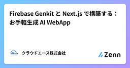
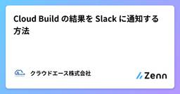
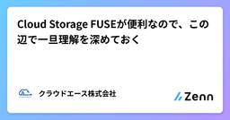
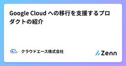
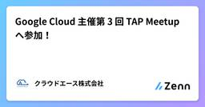
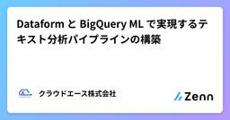

クラウドエース株式会社さんのフィード
https://zenn.dev/cloud_ace
クラウドエース株式会社 公式技術ブログです
フィード

Firebase Genkit と Next.js で構築する：お手軽生成 AI WebApp
クラウドエース株式会社さんのフィード
こんにちは！クラウドエースの河野です。この記事では Firebase Genkit と Next.js を使って、生成 AI を活用したシンプルな Web アプリを構築する方法を、初心者にも分かりやすく解説します。!Firebase Genkit は現在ベータ版です（2024年12月16日時点、バージョン v0.9）。今後の更新において下位互換性がない変更が加えられる可能性がある点にご注意ください。 このガイドで得られるものFirebase Genkit を使った生成 AI 機能の効率的な実装方法Next.js を活用したレスポンシブな Web アプリの作成V...
4時間前

Cloud Build の結果を Slack に通知する方法
クラウドエース株式会社さんのフィード
クラウドエースの北野です。Cloud Build の結果を Slack に通知する方法を紹介します。 概要Cloud Build を以下のシステム構成で Slack に通知させます。Pub/Sub に Cloud Build の結果の通知Secret Manager、Cloud Storage に Slack の通知先情報と、通知するメッセージの内容の保存Cloud Build Notifier を使い Slack に通知 はじめにCloud Build の承認機能の利便性や、Google Cloud に閉じたシステムで CI/CD パイプラインを構築できる点か...
11時間前

Cloud Storage FUSEが便利なので、この辺で一旦理解を深めておく
クラウドエース株式会社さんのフィード
はじめにこんにちは。クラウドエースの間瀬です。本記事は Google Cloud Champion Innovators Advent Calendar 2024の 18 日目の記事になります。しばらく記事投稿ができていなかったのですが、Advent Calendar に参加することで重い腰を上げることができました。今回は Google Cloud のオブジェクトストレージサービスである Cloud Storage( 以下、GCS ) に関連する FUSE という機能について少し踏み込んで理解を深める記事をお届けしたいと思います。私自身は本機能について実務で使ったことはなかっ...
2日前

Google Cloud への移行を支援するプロダクトの紹介
クラウドエース株式会社さんのフィード
こんにちは、クラウドエース株式会社 第一開発部の阿部です。この記事は Champion Innovators Advent Calendar 2024 の 16 日目の記事です。 はじめに現在、私はクラウドエース株式会社における Infra Modernization 支援パートナーとして、お客様の Google Cloud 移行の支援を担当しています。オンプレミス環境といっても多種多様な環境やビジネスがあり、それに合わせた移行方法を提案することが求められます。この記事では、そうしたオンプレミス環境からの移行を支援する代表的な Google Cloud プロダクトについてご紹...
4日前

Google Cloud 主催第 3 回 TAP Meetup へ参加！
クラウドエース株式会社さんのフィード
こんにちは、クラウドエースの安田です。今回は、12 月 9 日(月)に行われた、Google Cloud 主催の第 3 回 TAP Meetup へ参加した際の様子を紹介します。 TAP Meetup について最初に、TAP についてご紹介します。Tech Acceleration Program (以降 TAP と呼びます) は Google が提供する内製化支援です。数日にわたって行われるアジャイル型ワークショップで、迅速かつ効果的なアプリ開発を体験するものです。TAP Meetup は、TAP への参加経験者間の交流会となっており、LT やグループディスカッションを通...
6日前

Dataform と BigQuery ML で実現するテキスト分析パイプラインの構築
クラウドエース株式会社さんのフィード
はじめにこんにちは。クラウドエース第三開発部の泉澤です。本記事では、Google Cloud のサービスである Dataform と BigQuery ML を使って、LLM による「テキスト分析パイプライン」を構築する方法をシェアします。業務で BigQuery ML を使ってテキスト分析を実施した経験があるのですが、プロンプトや LLM のパラメータを設定する必要があるため、他の処理も同じクエリで行おうとするとクエリが複雑になり、可読性が下がりやすいと感じました。Dataform を使えばクエリを分割しつつも、一連のワークフローとして管理でき便利そうだと思い、この記事を書...
6日前

作業端末から本番環境の Cloud SQL, AlloyDB のプライベート IP インスタンスへのアクセス
クラウドエース株式会社さんのフィード
クラウドエースの北野です。SSH ポートフォワーディングによるローカル端末から Cloud SQL と AlloyDB のプライベート IP インスタンスにアクセスする方法を紹介します。 概要ローカル端末から インスタンスにアクセスするシステム構成は以下の通りです。COS インスタンス上の Auth Proxy プロセスによる Cloud SQL, AlloyDB インスタンスへの接続作業端末から COS インスタンスへの SSH ポートフォーワーディグによる Cloud SQL, AlloyDB インスタンスへの接続Compute Engine に SSH ポートフ...
9日前
Google SecOps：SOAR のケース管理でインシデント対応を効率化！
クラウドエース株式会社さんのフィード
はじめにこんにちは、クラウドエースの小田です。Google Security Operations（以下、Google SecOps）における SIEM については、過去記事でご紹介したようにさまざまなソースからセキュリティイベントログを収集・分析し、脅威の兆候を検知する役割を担います。しかし、SIEM だけでは、検知された脅威への対応が手動で行われるケースが多く、迅速な対応が難しいという課題がありました。そこで注目されているのが、SIEM とシームレスに連携する SOAR を用いて脅威への対応を自動化し、人手に頼っていた作業を効率化するという解決策があります。Google...
9日前
Google Cloud の Cloud SQL って何だろう?
クラウドエース株式会社さんのフィード
はじめにこんにちは！クラウドエース株式会社の金井です。今回は初学者向けに Google Cloud の Cloud SQL について書かせていただきます。Cloud SQL はフルマネージドなリレーショナル データベースを提供するサービスですが、これだけでは何ができるかイメージしにくいと思います。そこで今回の記事では Cloud SQL の機能について簡単に説明した後、コンソールでの作成方法を紹介していきます。 Cloud SQL とはまず Cloud SQL が何かを公式ドキュメントから見てみましょう。Cloud SQL は、MySQLPostgreSQLS...
9日前
[合成モニタリング] Google Cloudでユーザー操作を監視する
クラウドエース株式会社さんのフィード
はじめにこんにちは。クラウドエース第三開発部の工藤です。Google Cloud の Cloud Monitoring では合成モニタリングという機能を提供しています。この機能を使用することで一般的に合成監視や外形監視と呼ばれる監視を行うことができます。本記事では、 Cloud Monitoring の合成モニタリングがどのようなものか、どのように作成するかなど解説していきます。また、本記事と合わせて、弊社エンジニアによる以下のブログ記事も参照ください。こちらは preview 段階の記事となりますが、より理解を深めることができるかと思います。https://zenn....
10日前
Google Cloud で機械学習モデルを使うときの方針
クラウドエース株式会社さんのフィード
はじめにこんにちは、クラウドエース株式会社の技術本部に所属している池上有希乃です。Google Cloud では様々な機械学習プロダクトが利用可能ですが、選択肢が多いので「どういった方針で、どのプロダクトを利用すればいいか」と迷ってしまうときがあります。そこで、この記事では Google Cloud で機械学習モデルを使う際のガイドをしていこうと思います。!本記事は2024年12月1日時点の情報をもとに記述しています。記事中には一般提供前 (プレビュー段階) の機能も含まれています。 Google Cloud の機械学習オプション選定のフローチャート機械学習モデルの...
11日前
Gemini in BigQuery でできること
クラウドエース株式会社さんのフィード
はじめにこんにちは、クラウドエース株式会社 第一開発部所属の工藤です。本記事では、執筆時点（2024年12月6日）において Gemini in BigQuery で何ができるのかをまとめました。Gemini が Duet AI（旧名）の頃（2023年10月あたり）に以下の記事を書いたのですが、当時よりもできることがかなり増えていました。https://zenn.dev/cloud_ace/articles/204b163370b938ちなみに上記記事のタイトルですが、今後は Duet AI（現 Gemini）を使いこなさないとデータエンジニアとして生き残れないかも、という意味...
11日前
コード行数計測ツール「cloc」を使って改修ステップ数をカウントしてみた
クラウドエース株式会社さんのフィード
はじめにこんにちは。クラウドエース株式会社 第四開発部の相原です。本記事では、Git のコミット間でどれだけコードが改修されたかを、「cloc」を使ってカウントする方法について解説します。cloc はコード行数を計測したり、変更差分を分析するのに役立つ便利なツールです。この記事を通じて、リポジトリ内の変更をより効率的に把握できるようになり、プロジェクト管理やコードレビューに役立てていただければと思います。 環境macOS Sonoma 14.4.1Homebrew 4.4.6cloc 2.02 対象となる読者Git を日常的に使用している開発者コードの変...
15日前
Gemini for Google Cloud 101
クラウドエース株式会社さんのフィード
はじめにこんにちは、クラウドエース第一開発部に所属しているドーリです。今回は、Gemini for Google Cloud の基礎について、Gemini を初めて使う方向けの内容をお届けします。Gemini の基礎、使い方等について詳しく知りたい方、是非最後までお読みください！ Google Cloud とはGoogle Cloud は、Google が提供するクラウドコンピューティングサービスの総称です。これには、インフラ管理、データベース、機械学習、アプリケーション開発など、多岐にわたるサービスが含まれています。クラウドコンピューティングの強みは、インターネットを...
16日前
Stack Overflow 簡単説明
クラウドエース株式会社さんのフィード
はじめにこんにちは、クラウドエースの第一開発部に所属している申です。今回は、 Stack Overflow についてご紹介します。 Stack Overflowプログラミングにおけるバグの一種であり、またこれを利用した攻撃方法です。プログラムが実行される際に、入力された値がバッファ[1]を満たすだけでなく溢れ出し、バッファ以降の空間を侵害する現象です。簡単に言えば、バケツ（バッファ）に水（値）を入れるとき（入力時）に、水を多く入れすぎて床に溢れてしまうようなものと考えればよいです。主に、プログラムがユーザーからデータ（主に文字列）を入力される際に、ユーザーが指示通りにせ...
21日前
IAM での権限管理プロジェクト単位でやってませんか？
クラウドエース株式会社さんのフィード
はじめにこんにちは。クラウドエース株式会社 第四開発部の家野です。Google Cloud を利用する上で、IAM による権限管理はセキュリティの基礎になります。しかし、多くの方は、プロジェクト単位で権限を管理しているのではないでしょうか。この記事では、よりきめ細やかな権限管理を実現する、リソース単位での IAM 権限付与について解説します。この方法を理解することで、Google Cloud のセキュリティのレベルを 1 段階向上させることができます。 記事の目的プロジェクト単位での IAM 権限管理の課題を理解し、リソース単位での権限管理の必要性を認識する...
21日前
Vertex AI in Firebase SDK を使って、Next.jsで簡単なチャット機能を作成する。
クラウドエース株式会社さんのフィード
はじめにこんにちは、クラウドエースの第3開発部に所属している金です。今回は、Vertex AI in Firebase SDK を使って、Next.js で簡単なチャット機能を実装する方法についてご紹介します。 対象読者Firebase SDK の Vertex AI に興味がある方簡単に Gemini API を使ってみたい方Next.js での開発経験少しでもある方 事前準備Firebase プロジェクトの作成Next.js プロジェクトの作成(本記事では ver. 14.2.12 を使用) サービスの概要 1. Vertex AI in...
22日前
Google Cloud の SLA について表でまとめてみた(2024 年 11 月版)
クラウドエース株式会社さんのフィード
はじめにこんにちは。クラウドエースの中野(大)と申します。今回は以前執筆した記事 Google CloudのSLAについて表でまとめてみたの 2024 年 11 月時点での更新版となります。 この記事の位置付け昨年、同様の記事をリリースした際に社内でも評判が良かったため、社外の Google Cloud エンジニアや Google Cloud を利用したいと考えている方々にも一定の需要があると考え、今年も執筆しました。 確認方法昨年と同様、Google Cloud の公式サイトの Google Cloud プロダクトのドキュメントに記載のあるプロダクトを上から確認し...
25日前
複雑なイベント駆動型アーキテクチャに役立つ Eventarc Advanced を紹介
クラウドエース株式会社さんのフィード
こんにちは。クラウドエース第一開発部の竹内です。本記事では2024年10月30日にプレビュー版がリリースされた Eventarc Advanced について紹介します。Eventarc Advanced を使用すると、さまざまなサービス、アプリ、システム間でメッセージを受信、フィルタリング、変換、ルーティング、配信できます。 はじめに: Eventarc とはEventarc はソースからターゲットへイベントを非同期にルーティングする、スケーラブルなフルマネージドサービスで、イベント駆動型アーキテクチャの構築に役立ちます。https://cloud.google.com/e...
1ヶ月前
駆け出しエンジニアのための新規領域の学習方法と実装の流れ
クラウドエース株式会社さんのフィード
はじめにこんにちは、クラウドエース第一開発部所属の上原です。本記事では、駆け出しデータエンジニアである私が、会社からの課題であるデータ分析基盤構築課題 (以下、基盤構築課題) に取り組む中で感じたり実践したりしたおすすめの学習方法と、実際の課題への取り組みについて紹介していきます。この記事の目的は、新規領域全般に触れる際のおすすめの学習方法を共有することです。ただし、記事の全体として、筆者にとっての新規領域であるデータエンジニアリング(基盤構築課題) をベースとした内容になっています。!紹介する内容はあくまで筆者個人が考えたり実践したものになりますので、紹介される...
1ヶ月前